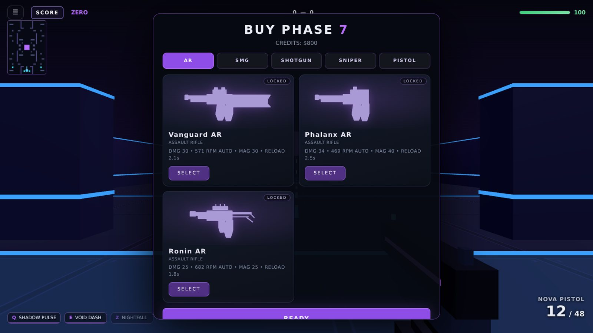

◆
Round buy-phase economy
Earn credits each round, open the five-class shop during buy phase, and build loadouts where every firearm has distinct damage, RPM, recoil, magazine size, and reload timing.
Precision tactical gunplay built for Android. Deploy against disciplined AI or host peer-to-peer rooms across TDM, Free-For-All, and 5v5 Shadow Core — manage round buy-phase credits, master 15 firearms and 3 Resonator kits, and unlock 11 melee blades by level.
CINEMATIC GAMEPLAY PREVIEW
Real build showcase reel compiled directly from shipped SCS captures — mode selection, round buy-phase economy, Resonator abilities, and live combat HUD.
DIRECT STATIC APK DISTRIBUTION
Served directly from this official site (/apk/SCS.apk) — verified package com.sinsofchaoticshadow.game, signed with the pinned developer certificate and SHA-256 verified on every release. Install over an older SCS build to keep your local data.
VERIFIED SIGNED RELEASE — SHA-256 CHECKSUM PUBLISHED BELOW.
Install note: Android may ask you to allow installs from your browser — this is normal for games distributed outside an app store. Do not uninstall an older SCS build first; installing over it keeps your local progress.
Security Scan Notice: When installing the SCS APK, Google Play Protect may ask you to scan the app before proceeding. Tap “Scan app” and follow the on-screen instructions. Once the scan is complete, continue with the installation if your device indicates it is safe.
Previous public releases:
TACTICAL HIGHLIGHTS
Every system in Sins of Chaotic Shadow is engineered around readable sightlines, round-by-round economy decisions, and responsive mobile controls.
Earn credits each round, open the five-class shop during buy phase, and build loadouts where every firearm has distinct damage, RPM, recoil, magazine size, and reload timing.
Three weapons per class across AR, SMG, Shotgun, Sniper, and Pistol — plus 11 level-unlocked blades (Karambits, Katanas, Kunai, Cleaver, and Akimbo pairs) with inspect and slash animations.
Deploy as Vex (Assault), Aura (Support), or Rift (Control) — combining wall-scan pulses, collision-true dashes, domes, shields, barriers, and gravity wells.
Ten AI bots run Resonator models, patrol/objective navigation, aim tracking, and muzzle flashes across Easy, Normal, Hard, and Nightmare difficulty settings.
Share a 4-digit room code for unranked 5v5 Shadow Core or TDM with friends, complete with map voting (host vote resolves ties) and configurable bot-fill or player-only slots.
Warm up on targets, a recoil control wall, a movement course, weapon trials, and ability cooldown checks. Strictly practice-only: zero inflated kills, XP, or rating.
ARENA ROTATION & PREVIEWS
Inspect the four daylight-converted arenas playable today in Android APK v0.22.1, plus our upcoming map spotlight: Sunken Meridian.
FEATURED UPCOMING ARENA
Sunken Meridian is an upcoming SCS tactical arena currently in development and not yet bundled in the downloadable v0.22.1 signed Android APK (/apk/SCS.apk). Per project honesty rules, unshipped lane callouts, spawn counts, and concept renders are never fabricated ahead of release — verified screenshots and mode compatibility will be published here once Sunken Meridian ships in a signed Android update.
Core symmetrical multi-lane arena built around a central core objective, flanking corridors, and hard-angle pillar cover. Upgraded with procedural daytime sky lighting and sun-matched shadows in 0.22.0; also serves as the automatic fallback for retired map selections.
High-contrast neon-accented combat arena converted to crisp blue-zenith daylight skies and cool atmospheric haze in 0.22.0 while preserving its original collision, sightlines, and spawn geometry.
Designated Attack & Destroy objective arena engineered for plant, defuse, and breach rotations, featuring dedicated AI bot patrol nodes and full daytime sky & shadow integration.
Industrial tactical complex featuring warm daylight atmospheric haze, sun-matched shadows, and structured mid-to-long sightlines across solo bot modes and peer-to-peer private lobbies.
Archive note: Eclipse Veil was retired in v0.22.0 during the daylight conversion; any saved selection automatically resolves to Umbra Crossing.
GAME MODES
Switch seamlessly between squad rounds, solo kill races, and tactical 5v5 objective play.
Win rounds by clearing the opposing squad or hitting target elimination counts in private rooms. Buy weapons between rounds, hold crossfires, and close out before enemies regroup.
Every operator for themselves against six independent AI opponents, each tracking individual score and rapid respawns. First to 12 eliminations — or top leader at the 3:00 horn.
Tactical competitive-format 5v5 round scoring with plant, defuse, and squad-elimination win conditions — playable today solo with bots (fill or player-only) and in peer-to-peer 5v5 private lobbies.
Honest competitive status: online ranked matchmaking is currently disabled (Planned) — no ranked server endpoint is configured, and SCS never fakes online queues with disguised bots. Competitive 5v5 Shadow Core rules run unranked against AI or in peer-to-peer private rooms; local career rating is earned against bots only.
INTERACTIVE ARSENAL
Filter every verified firearm and level-unlocked blade from the shipped v0.22.1 build — exact credit costs, damage profiles, magazines, and unlock levels.
Balanced automatic rifle — dependable mid-range primary.
Heavy-hitting sustained rifle with extended 40-round box.
High-tempo entry rifle built for rapid tempo swings.
Agile eco-round submachine gun for aggressive flanks.
High-capacity 34-round shredder for tight choke points.
Hard-punching tactical SMG bridging close and mid lanes.
Pump-action corridor stopper with tight 9-pellet spread.
Drum-fed automatic shotgun built to clear objective sites.
Break-open double-barrel unleashing 12 pellets per shell.
Precision bolt-style long-lane sniper rifle.
Heavy flagship sniper engineered for one-shot angle control.
Semi-auto marksman rifle rewarding disciplined two-taps.
Standard sidearm supporting both tap-fire and hold-to-fire.
Rapid-cycling machine pistol for close-range emergencies.
High-caliber 6-shot revolver punishing wide peeks.
LEVEL-GATED PROGRESSION · ZERO MICROTRANSACTIONS
Every blade has its own 3D viewmodel, equip flourish, inspect choreography, and neon slash trail — unlocked strictly by player level in Collection → Melee:

RESONATOR OPERATORS
Select any of the three playable Resonators to inspect their verified tactical (Q / E) and ultimate (Z) kit.
Aggressive shadow operator. Scouts lanes with scanning shockwaves and closes gaps with collision-true void dashes.
Charges for 0.4s, then releases a 24m scanning shockwave outlining living enemies through walls for 4.5s (deals no damage; 8s cooldown).
Rushes up to 9m forward in ~0.2s. Respects world collision (stops cleanly at walls) and cancels an active magazine reload (6s cooldown).
For 8s every living enemy is outlined through walls while granting +20% movement speed and +28% weapon fire rate.
Sustained combat medic & anchor. Regenerates health mid-duel, absorbs burst damage, and fortifies objective plants.
Restores 60 HP over 4s (15 HP/s). Healing continues uninterrupted while moving and firing.
Wraps you in a 45-point protective shield for 6s that absorbs incoming damage before health is touched.
Deploys a 6m protective dome for 10s. Standing inside heals 12 HP/s and reduces incoming damage by 50%.
Spatial area-denial specialist. Punishes pushes with gravity wells, hard-blocks sightlines, and drags squads off cover.
Deploys a gravity well up to 8m ahead. For 5s, enemies within its 7m radius are slowed to 40% movement speed.
Raises a solid 6m-wide wall 4m ahead for 6s that blocks both movement and bullets for all combatants before dissolving.
Opens a singularity up to 10m ahead for 6s. Enemies within 9m are pulled toward the center, slowed, and take 18 damage/s.
STRAIGHT FROM THE BUILD
Captured directly from the real build — zero mockups or bullshots. Filter by category or click any frame to inspect full screen.
VERSION HISTORY & RELEASE ARCHIVE
Documented features, maps, arsenal additions, performance optimizations, bug fixes, known issues, and individual APK release downloads.
Selected verified highlights from the project's documented game history. Game changelog entries do not alter which binary is served: v0.22.1 is the current signed Android APK at Download. Dates are shown only when documented.
LOW effects quality.LOW effects quality retains a static sky and cheaper sun rays while omitting the cirrus cloud layer and birds for low-end GPUs.The site's release manifest records this signed APK (com.sinsofchaoticshadow.game, versionCode 3, 5,851,613 bytes, SHA-256 da487b16…b907280). Separate gameplay changes for this patch are not documented in the supplied README.
LOW quality uses a smaller static sky and omits environment reflections; LOW / Off shadow quality disables real-time shadow maps.Every verified public APK remains linked directly while hosted. Older pre-0.22.1 development milestones do not have separate public APK binaries archived.
DEV DISPATCHES & PLAYER HUB
Official development announcements, clearly labeled upcoming previews, real in-build captures, bug reporting, and configurable community channels.
Android release v0.22.1 (5.58 MB) is served directly from /apk/SCS.apk with no third-party login walls or expiring links, backed by pinned signer-certificate continuity and published SHA-256 verification.
Following the full daylight sky conversion across Umbra Crossing, Neon Veil, Foundry Siege, and Ironfall Industries, the 0.23.0 sky pass adds volumetric rays and dual moving cloud layers while preserving fast static-sky fallbacks on LOW preset devices.
FEEDBACK & BUG REPORTS
Reach developer 0_umbra directly on Discord or open an issue on the public site repository. Use the quick template generator below to copy clean device diagnostics for faster fixes.
Copies a structured v0.22.1 report template to your clipboard.
COMMUNITY CHANNELS & CAPTURES
Social destinations are loaded from data/community.json. Unconfigured channels are shown transparently rather than linking to placeholder pages.
FEATURED BUILD CAPTURES — SHARE YOUR MATCH SCREENSHOTS VIA DISCORD (0_umbra)
VERIFIED SYSTEM SPECS & TUNING
Hardware/OS specifications verified directly from the signed v0.22.1 APK manifest, paired with real in-game render controls and troubleshooting.
PACKAGE MANIFEST FACTS
IN-GAME SETTINGS → RENDER CONTROL
Open Settings → Render Control and drop Render Quality to 75% or 50%, set Shadow Quality to Off, Effects Quality to Low, and View Distance to Low. Cap Target FPS to 30 FPS or 60 FPS instead of uncapped refresh rates, close background social/video apps, and avoid fast-charging while playing to prevent thermal CPU/GPU throttling.
SCS renders 3D arenas through Android's system WebGL driver. Update Android System WebView and Google Chrome in the Play Store, then restart your phone. On low-memory devices, set Texture Quality to Low. Also verify your mobile data or Wi-Fi connection is active, as offline startup is not yet enabled.
First verify your device runs Android 7.0 or newer and that the downloaded SCS.apk is complete (5,851,613 bytes, SHA-256 da487b1657b3c2d5ac3f8f6340de9b11eb45de55d55899e631d2ac0ddb907280) — an interrupted browser download causes “problem parsing the package”. Enable Install unknown apps for your browser once, and if Google Play Protect prompts you, tap “Scan app” and proceed once scanning finishes.
Download the new /apk/SCS.apk and install it directly over your existing app — do not uninstall SCS first. All official releases use package com.sinsofchaoticshadow.game signed with the same developer certificate, so Android upgrades cleanly in place while keeping local data. Using an SCS cloud account additionally syncs level, rank, unlocks, and settings across devices.
QUESTIONS
Download the signed Android APK on this page. Browser gameplay is not currently available because the latest maps are not available for the browser build.
SCS accounts support server-verified level, rank, unlock sync and shared settings across devices. Offline gameplay is planned for a future update; it is not currently available.
Online ranked matchmaking is disabled — no ranked service is configured. Local career rating is earned against bots, and private rooms are unranked peer-to-peer.
No — install the new APK over the old build and your local data stays. Do not uninstall first. Every release is signed with the same developer certificate, so Android updates it in place.
Every release publishes a SHA-256 checksum (shown in the Download section). On desktop: sha256sum file.apk (Linux/macOS) or certutil -hashfile file.apk SHA256 (Windows) and compare.
SCS is distributed directly by the developer rather than through an app store, so Android asks you to allow installs from your browser once. That prompt is standard for sideloaded APKs.
The game itself has no ads and no analytics. When you use an SCS account, your profile, unlocks and settings are stored in the developer's Supabase project under row-level security — see the Privacy summary in the footer.
Open an issue on the public site repository or reach the developer on Discord: 0_umbra.
ABOUT THE PROJECT
Sins of Chaotic Shadow is an independent tactical FPS project led by a single developer (0-umbra) with an explicit rule: nothing on this site or in the game pretends to be something it isn't. Ranked is disabled until a real ranked service exists. Progress is server-verified or it is called local. Weapon sounds are synthesized, not sampled. The screenshots above come from the shipped build.
The game is built on Three.js with peer-to-peer multiplayer over PeerJS, accounts on Supabase, and ships to Android through Capacitor. SCS is not affiliated with, sponsored by or endorsed by the vendors of those technologies. Android is a trademark of Google LLC.
Last updated: 2026-10-22
By downloading or playing SCS you agree to these terms. SCS is provided as is, without warranties of any kind. You may install and play the game for personal, non-commercial use. You may not reverse-engineer the app to circumvent account or progression systems, attack the game services, distribute modified APKs under the SCS name, or use the game or its assets for illegal purposes. In-game purchases are not offered; nothing here is a marketplace. The game is rated for teens and up: it contains stylized, non-realistic combat against AI bots. Liability is limited to the maximum extent permitted by law. These terms may be updated on this page.
Last updated: 2026-10-22
This website itself collects nothing: no cookies, no analytics, no ads, no tracking pixels. Offline gameplay is planned for a future update. If you create an optional SCS account, the developer's Supabase project stores your email, chosen callsign, avatar, and gameplay progression (level, unlocks, stats, settings) protected by row-level security, used only to provide your account and cloud save. No third-party ad or analytics SDKs are embedded in the game. You can request deletion of your account data via the support contact below. Children under 13 should not create accounts.